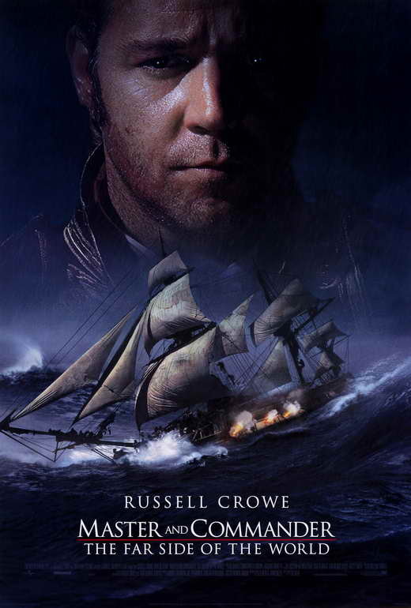

| Month | Day | Year |
|---|---|---|
| 01 | 12 | 2022 |
"There is nothing general except names."
I live here in the city with my girlfriend and her plants.
- Steel Industry
- Civil Rights Movement
- Frank Stitt Restaurants

That's a quote attributed to John Stuart Mill.
I was born nearby, but not too nearby. Rural Alabama.
- Dollar General
- Ineffable Existential Malaise
- Locus of 21st Century Political Unrest

The above quote reflects the metaphysical view called 'nominalism.'
It took me about ten years to get a BA in English on the side while working as a linecook.
- Reading
- Writing
- Research

Nominalists say that concepts are strictly psychological contingencies.
I'm academically much more interested in philosophy, though it was only my minor.
- Continental Philsophy
- Analytic Philosophy
- American Pragmatism

The opposite view is sometimes called "Platonic Realism."
I can cook pretty well, but maybe not as well as you might expect for a chef-de-partie in fine dining.
- Brunch
- Oven Rack Burns
- Needs More Acid
Plato thought that forms, the pure concepts behind objects, were not just real but more real than immanent objects.
I commute to work on a scooter. It's a commuter scooter - a commooter, if you would.
- Looks Incredibly Lame but Feels Great
- Practically Free Personal Transportation
- Cars Honk at You to Try and Hurt Your Feelings
- How to code a pizza calculator utility.
- How to make a decent looking webpage.
- How to computer.
- Command of a real programming language like Javascript.
- How to live forever and never die.
- I don't own a car. Not very interesting but still on my mind a lot.
- I also went to trucking school years ago.
- I lasted about two weeks before I drug a trailer through a stop sign.
- Trucking is a demanding and emotionally isolating profession.
- There are only four facts listed here and this fifth item is meta-referential.
Master and Commander
I watched Master and Commander w/ Russel Crowe in my early teen years while I was home sick from school. It totally drew me in to the swashbuckling historical setting - very immersive. I don't remember too many details of the plot but there's a character who's like an analogue of Charles Darwin and there's a lot of moral/social commentary. Little more cerebral than you'd expect an action movie to be but doesn't overdo it with woolgathering or anything.
- Russel Crowe
- pirate #1
- pirate #2
- Her Majesty's Royal Navy
- Probably some kind of tropical bird.
- Release: post-9/11 pre-housing market collapse
- Budget: enough to get peak Russel Crowe out of bed
- Box Office: I saw it on VHS so possibly zero dollars